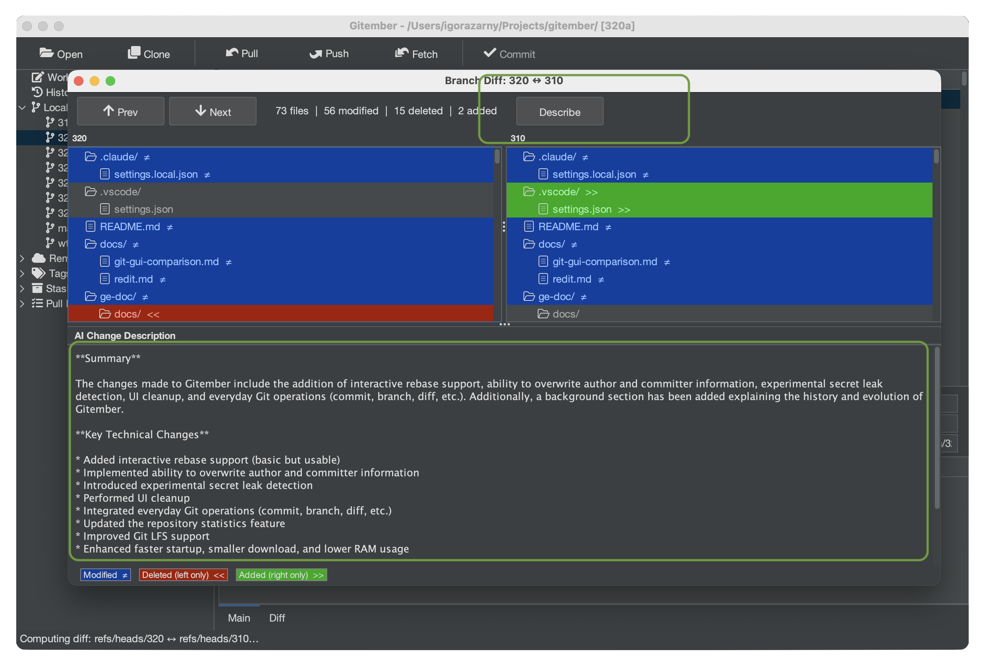
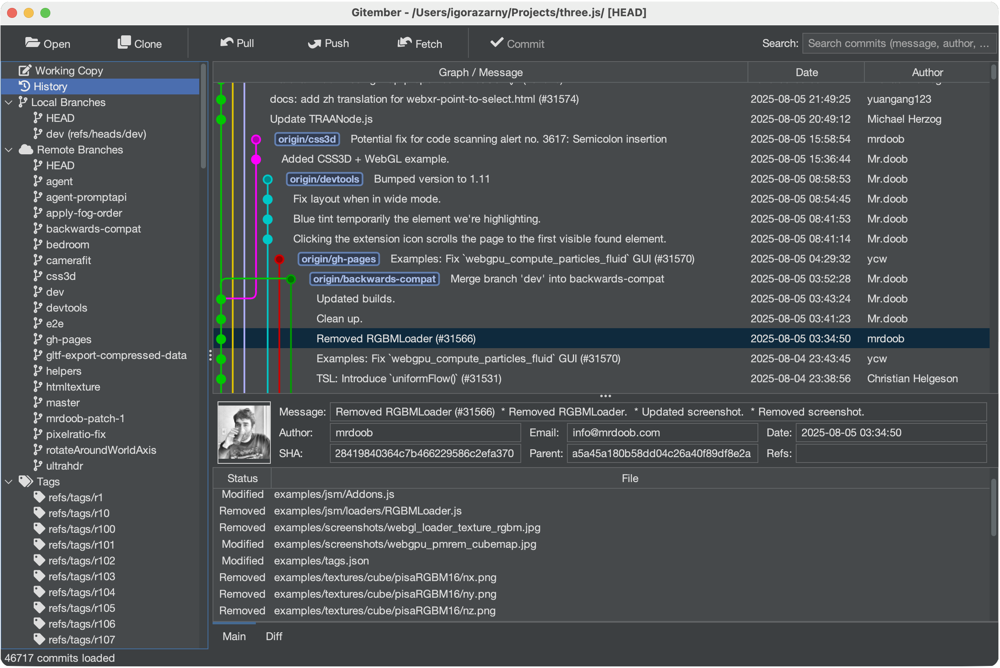
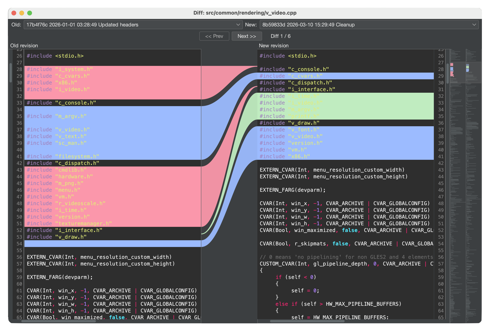
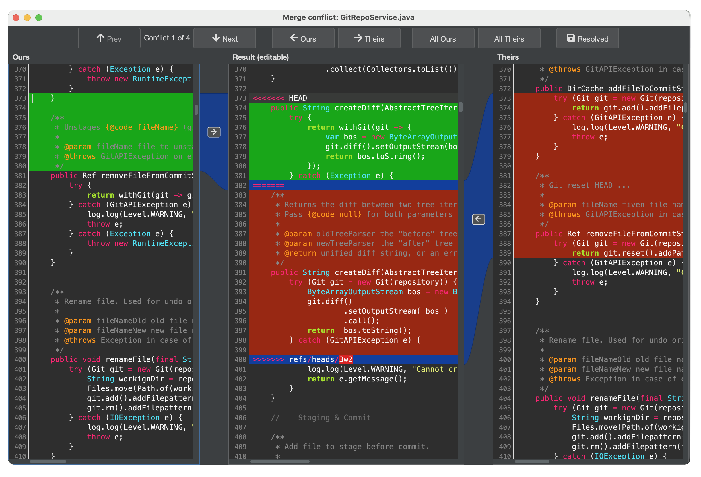
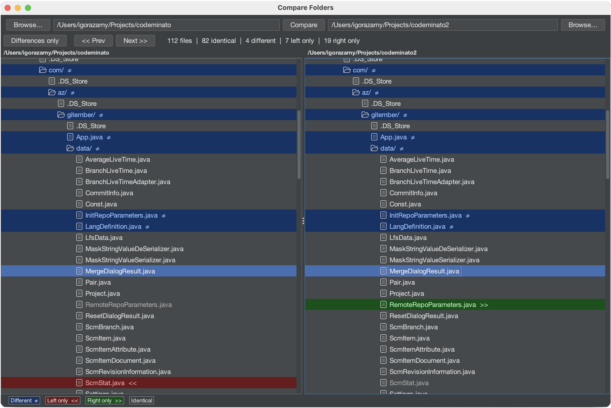
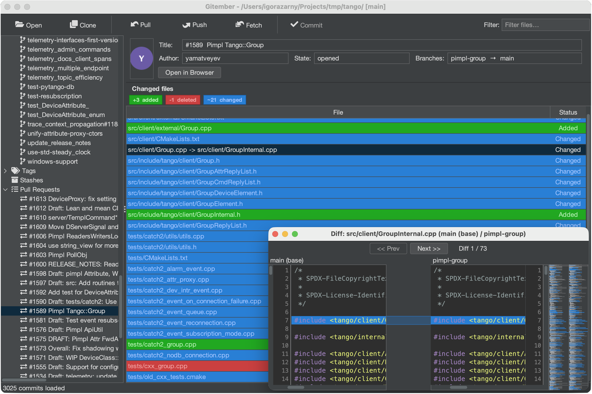
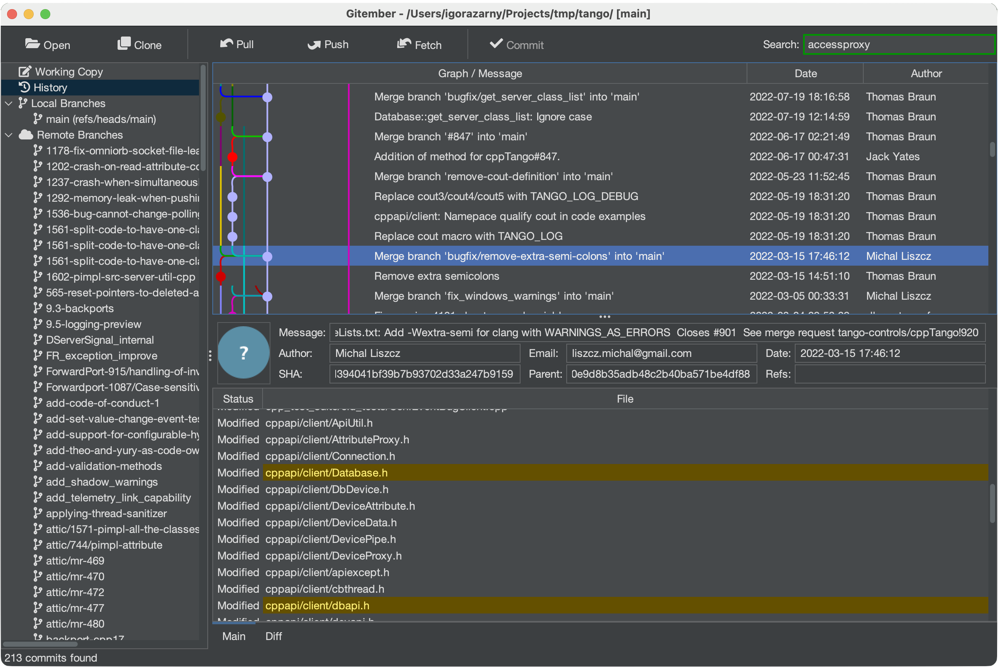
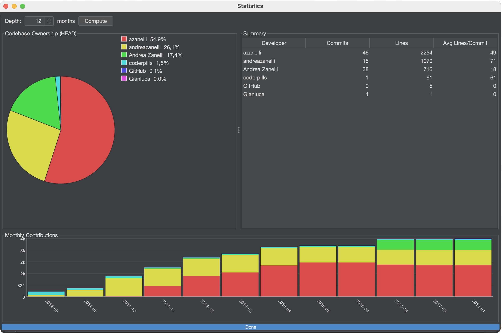

为每一位 Git 用户打造
无论你是刚刚安装 Git，还是在管理多团队协作的大型仓库，Gitember 都能提供你所需要的一切。
初学者
不必再死记晦涩的命令行参数。Gitember 将复杂的 Git 操作变成简单的点击操作——提交、推送、拉取、分支，全部在一个窗口中完成。
开发者
可视化仓库历史，审查 Pull Request，在带语法高亮的差异视图中浏览改动，并在整个提交历史中进行高级全文搜索。
团队与专业人士
通过统计报告跟踪项目进展，管理 Git LFS 资源，比较完整的目录树，并审查来自 GitHub、GitLab、Bitbucket、Azure DevOps 或 Gitea 的 PR——一个工具全部搞定。
3.6 版本新功能
西班牙语和乌克兰语
Gitember 新增西班牙语和乌克兰语界面。界面语言默认跟随操作系统，也可以在设置中选择。
Jira 和 Linear
与工单系统集成：无需离开 Git 客户端，即可将工作关联到 Jira 和 Linear 中的任务。
Git 命令
查看与你在图形界面中执行的每个操作相对应的 Git 命令行——更快地学习 Git，或在脚本中复用这些命令。
更快启动
在 Java 27 运行时上支持预先（AOT）缓存（JEP 544）：Gitember 启动所需的类会被提前加载和链接。
核心功能
满足日常所需，而且远不止于此
多个仓库，一个工作集
工作区将多个相互独立的仓库组合在一起，例如：
- 一个后端和一个前端
- 一组微服务
- 一个 SPI 及其各个实现
这样你就可以通过一次操作，对所有仓库执行拉取、推送、提交、分支和合并，而不必逐个打开每个仓库。这既不是子模块，也不是单体仓库（monorepo）：每个仓库都保留自己的历史、远程和分支。
- 工作区仪表板——整个工作集一目了然：汇总表格、合并工作副本以及跨仓库搜索
- 合并工作副本——所有仓库的已更改文件显示在同一棵树中，暂存复选框和右键菜单与单个仓库完全相同
- 跨仓库搜索——同时搜索所有工作副本的内容，结果按仓库分组
- 一次提交，一条信息——从任意多个仓库中暂存文件并一起提交，每个文件旁都会显示所属仓库
AI 功能
Gitember 的实验性 AI 功能使用在本地运行的 AI 模型来增强安全性和代码审查，不会把你的源代码或数据发送到云端。AI 可以在提交前检测潜在的密钥泄露，并用通俗的语言总结分支之间的差异。
- 本地 AI——所有推理都通过 Ollama 在你的电脑上运行
- 密钥泄露检测——提交前扫描已暂存的文件，查找密码、API 密钥、令牌、凭据、私钥及其他敏感数据
- AI 分支描述——总结分支差异、关键技术改动和潜在影响，让代码审查和发布说明更轻松
- AI 提交信息——根据改动自动生成提交信息


完整的仓库与文件历史
在结构化的时间线中浏览完整的提交历史。点击任意提交即可查看完整差异、受影响的文件、作者信息和元数据。可按分支、作者、日期范围或关键字筛选，快速找到所需内容。
- 带有分支线和合并线的可视化提交图
- 文件级历史——追踪某个文件在整个项目生命周期中的每一次改动
- 一键比较任意两个提交
- 两次点击即可将任意文件恢复到任意历史版本
开发者喜爱的文件差异查看器
Gitember 内置的差异引擎远不止简单的行高亮。无论是审查同事的 Pull Request，还是排查回归问题，你都能清楚地看到改了什么、为什么改。
- 统一差异——行内视图，用颜色区分新增和删除
- 上下文差异——显示周围的代码行，无需滚动即可了解全貌
- 并排差异——双栏视图，轻松逐行比较
- 为 Java、Python、JavaScript、TypeScript、Kotlin、Go、Rust、C/C++、SQL、YAML、Markdown 等 40 多种语言提供语法高亮
- 浅色和深色主题，跟随系统偏好自动切换


冲突解决：三方合并
借助直观的三方合并界面，你不仅能看到“改了什么”，还能理解“为什么改”。
- 自信地解决冲突。精确地选择、组合或编辑改动，不必在晦涩的冲突标记中翻找。
- 无论是变基、合并分支还是审查改动，Gitember 都能让你保持专注、高效。
- 清晰取代混乱。简洁、无干扰的界面以真正易懂的方式突出显示差异。
文件夹比较工具——纵览全局
需要将备份副本、构建输出或功能分支的文件结构与工作目录进行比较？Gitember 的文件夹比较工具会扫描两个目录，并以同步、按颜色区分的树形视图呈现。
- 绿色——仅存在于右侧文件夹的文件（新增）
- 红色——仅存在于左侧文件夹的文件（删除）
- 蓝色——两侧都存在但内容不同的文件
- 可配置的忽略列表——自动跳过编译产物（.class、.jar、.dll、.pyc…）
- 双击任意已更改的文件，即可打开完整的并排差异查看器
- 使用“下一个 / 上一个”按钮在差异之间跳转


审查 Pull Request——无需浏览器
将 Gitember 连接到你的 GitHub、GitLab、Bitbucket 或自托管的 Gitea 实例，无需离开应用即可审查打开的 Pull Request。查看 PR 标题、作者、状态以及完整的已更改文件列表——按颜色区分，随时可以对比差异。
- 支持 GitHub、GitLab、Bitbucket Cloud 和 Gitea
- 同时支持 HTTPS 和 SSH 远程地址
- 已更改的文件按新增 / 修改 / 删除分类并以颜色区分
- 双击任意文件，即可查看基础分支与源分支之间的完整并排差异
- 一键“在浏览器中打开”，直接跳转到 PR 页面
搜索一切，找到一切
Gitember 的索引引擎远不止在文本文件中查找字符串。它能从多种文件格式中提取并索引内容，只需一次查询，即可搜索整个仓库历史。
- 搜索提交信息、标签、分支名称和文件路径
- 在源代码、Markdown 和配置文件中进行全文搜索
- 索引图片（PNG、JPEG、SVG）、PDF、Office 文档（Word、Excel、PowerPoint）、OpenDocument 文件以及 CAD 格式（DXF、STL）中的内容
- 按分支、作者或日期范围筛选结果


仓库统计一目了然
Gitember 清晰地展示仓库随时间演变的情况。内置分析功能将提交历史转化为有意义的统计数据，帮助你了解开发活跃度、贡献者动态和项目增长，无需导出数据或运行外部工具。
- 展示仓库随时间增长的提交活动图表
- 按作者统计提交数的贡献者统计
- 分支活动概览，识别活跃和不活跃的分支
- 按日、周、月的提交分布
- 快速了解仓库大小、提交数、分支数和标签数
一个 Git 客户端，满足所有需求
完整的 Git 支持
克隆、初始化、提交、推送、拉取、获取、分支、合并、变基、储藏、标签——所有常用 Git 命令都可通过简洁的可视化界面完成。支持 SSH 和 HTTPS 远程仓库。
强大的文件差异查看器
统一、上下文和并排三种差异模式，为 40 多种语言提供完整语法高亮。在任意提交或工作副本文件中，逐行即时查看改动。
文件夹比较工具
在同步的树形视图中并排比较两个完整的目录树。即使项目结构庞大，也能立即发现新增、删除或修改的文件。
高级搜索
搜索提交信息、标签、分支名称和文件内容——包括文本文件、图片、Office 文档、PDF 和 CAD 图纸，全部建立索引，即时可搜。
统计与洞察
通过可视化统计快速了解项目健康状况：提交频率、每位作者的改动行数、分支活动等。非常适合迭代回顾和代码审计。
支持 Git LFS
借助内置的 Git 大文件存储支持，管理图片、视频、3D 模型、数据集等大型二进制资源。跟踪文件模式、获取对象，并直接在界面中查看 LFS 文件状态。
为什么选择 Gitember？
Gitember 是一款免费开源的 Git 图形客户端，专为希望使用可视化 Git 工作流、又不想面对大型 IDE 复杂性的开发者设计。它将仓库历史、Git 操作、差异与合并工具、文件夹比较、统计、全文搜索和 Pull Request 审查整合在一个跨平台桌面应用中。
常见问题
适用于 Windows、macOS 和 Linux 的免费 Git 图形客户端——GitHub Desktop、Sourcetree 和 GitKraken 的替代品，支持 Git LFS、差异对比和三方合并。
-
Gitember 免费吗？
是的。Gitember 免费开源（GNU GPL 3.0）。没有订阅，没有付费的“Pro”版本，也不需要账号。下载 Windows、macOS 或 Linux 版本，无需注册即可使用全部功能——历史、差异、合并、LFS、搜索和 Pull Request。
-
Gitember 能在 Windows 上运行吗？
可以。Gitember 提供 Windows MSI 和 ZIP 安装包，以及 Microsoft Store 版本，支持 Windows 8 及更高版本。MSI 是常规安装程序；ZIP 是便携版本。原生安装包已内置 Java，无需事先安装 JDK。
-
Gitember 能在 macOS 上运行吗？
可以。Gitember 提供经过签名和公证的 Apple Silicon DMG。像安装其他 Mac 应用一样：打开 DMG，将 Gitember 拖入“应用程序”文件夹。由于已签名并经过公证，Gatekeeper 无需额外步骤即可放行。
-
Gitember 能在 Linux 上运行吗？
可以。Gitember 提供 Linux DEB 安装包和可直接运行的 fat JAR。在 Debian 和 Ubuntu 上，DEB 是最简单的方式；JAR 则可以在任何安装了较新 JRE 的系统上运行。
-
Gitember 支持 GitHub 吗？
支持。Gitember 支持 GitHub、GitLab、Bitbucket 和 Gitea。通过 HTTPS 或 SSH 克隆，然后使用个人访问令牌在应用内浏览和审查 Pull Request 或 Merge Request。你不会被绑定在 GitHub 上——同一个客户端也适用于 GitLab、Bitbucket 和自托管的 Gitea。
-
Gitember 支持 Git LFS 吗？
支持。Gitember 内置 Git 大文件存储（LFS）支持。可以为仓库启用 LFS、跟踪二进制文件模式、获取 LFS 对象，并在工作副本中查看 LFS 文件状态——适用于图片、视频、3D 资源和数据集。
-
Gitember 有 Git 差异查看器吗？
有。Gitember 内置 Git 差异查看器，支持统一、上下文和并排三种模式，并为 40 多种语言提供语法高亮。可以比较工作副本改动、提交和分支。另有独立的文件夹比较工具，可比较两个目录树，包括不是 Git 仓库的文件夹。
-
Gitember 支持三方合并吗？
支持。Gitember 内置可视化三方合并编辑器，用于解决合并和变基冲突。你可以在同一处看到本地（ours）、对方（theirs）和合并结果，然后选择、组合或编辑冲突块，无需在冲突标记中翻找。
-
Gitember 可以替代 GitHub Desktop 吗？
可以。对于想要一款不局限于 GitHub 的可视化 Git 客户端的开发者，Gitember 是免费的 GitHub Desktop 替代品。它支持 GitHub、GitLab、Bitbucket 和 Gitea，并提供提交图、并排差异、三方合并、Git LFS、多仓库工作区、Lucene 全文搜索以及应用内 Pull Request 审查。如果你正在寻找 GitHub Desktop 的替代品，可以从免费下载或 Git 图形客户端对比（英文）开始。
-
Gitember 可以替代 Sourcetree 吗？
可以。Gitember 是免费的 Sourcetree 替代品：在可视化 Git 界面中完成克隆、提交、分支、合并、变基、储藏和打标签。内置交互式变基、储藏、差异查看器和三方合并。与 Sourcetree 不同，Gitember 不需要 Atlassian 账号。
-
Gitember 可以替代 GitKraken 吗？
可以。Gitember 是免费开源的 GitKraken 替代品。无需 Pro 订阅，即可获得可视化提交图、差异对比、合并工具和 Git 托管平台集成。可选的 AI 功能（提交信息、分支摘要、密钥泄露检测）通过 Ollama 在本地运行——使用这些功能时，你的源代码不会离开本机。
-
有什么好用的免费 Git 图形客户端？
Gitember 是一款适用于 Windows、macOS 和 Linux 的免费 Git 图形客户端。它覆盖日常 Git 工作，还提供并排差异、三方合并、文件夹比较、Git LFS、全文搜索和 Pull Request 审查。无需账号，也没有付费计划。可以在 Git 图形客户端对比（英文）中查看它与 GitHub Desktop、Sourcetree、GitKraken 等工具的比较。
-
使用 Gitember 需要账号吗？
不需要。Gitember 可以离线使用本地仓库，不需要 Gitember 账号。GitHub、GitLab、Bitbucket 或 Gitea 令牌是可选的，只有在审查 Pull Request 或访问需要认证的远程仓库时才需要。
-
Gitember 能同时管理多个 Git 仓库吗？
可以。工作区将多个独立的仓库（例如一个后端和一个前端，或若干微服务）组合在一起，让你通过一次操作对所有仓库执行拉取、推送、提交、分支和合并。每个仓库都保留自己的历史和远程——这既不是子模块，也不是单体仓库。工作区文档（英文）
-
可以在 Gitember 中审查 Pull Request 吗？
可以。Gitember 可以列出并打开来自 GitHub、GitLab、Bitbucket 和 Gitea 的 Pull Request 或 Merge Request。在项目设置中保存访问令牌，即可在不切换到浏览器的情况下审查请求的差异。
-
Gitember 的源代码在哪里？
Gitember 在 GitHub 上开源。文档位于 gitember.org/doc（英文）。如有问题，请联系 Igor Azarny。
下载 Gitember
免费开源。无需账号或注册，可离线使用。
版本 3.6 · 2026 年 11 月
有问题？请发邮件给 Igor Azarny